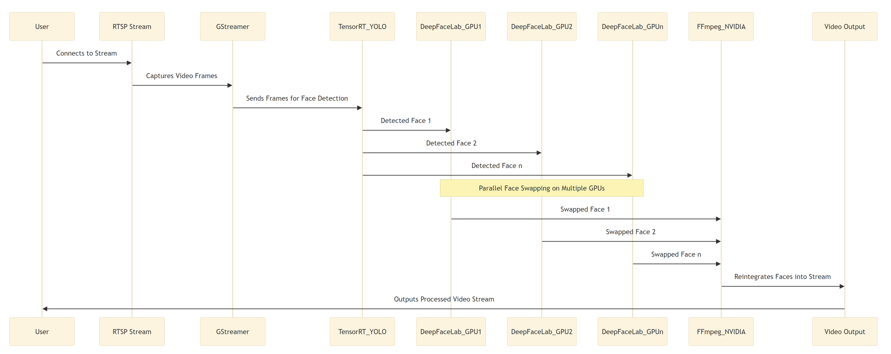
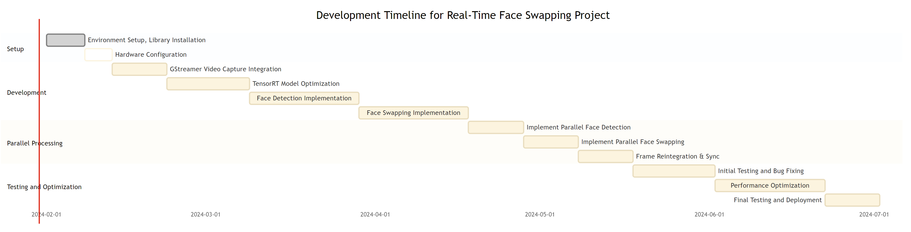

KnoWhere is an AI-driven visitor attention-tracking system for museums and immersive experience spaces, using computer vision and machine vision cameras to capture gaze vectors, emotion signals, and spatial attention metrics in real time without wearables. It enables hyper-personalised narrative adaptation and provides curators with actionable behavioural analytics whilst preserving visitor privacy through anonymised data processing.
Semantic Classification
Content
- automatically published
Enabling Hyper-Personalised Experiences
- Project Name: KnoWhere
- Objective: Enabling Hyper-Personalized Experiences in Physical Spaces via Attention Tracking
- Competition: AI Solutions to improve productivity in key sectors
- Innovation Area: Creative industries
- Approach: Using AI and computer vision for non-intrusive tracking of attention in museums and immersive experiences
- Technology: AI, computer vision, steerable barrier lenticular displays
- The project aims to revolutionize visitor experiences in museums and immersive spaces. Leveraging AI and computer vision, KnoWhere offers seamless integration into existing environments, tracking user attention and emotion in real time. This innovation allows for the adaptation and personalization of experiences, enhancing visitor engagement and providing actionable insights for curators and designers.
- Motivation: Enhancing visitor experiences with AI-enabled narrative engines
- Market Opportunity: Overcoming limitations of current intrusive and limited solutions
- Initial Work: Development studies underlining the viability of seamless AI and computer vision integration
- Density: Offers people counting and spatial analytics using depth sensors.
- Outsight: Provides 3D semantic cameras for spatial intelligence in retail and industrial settings.
- Iris: Uses thermal cameras for occupancy and attention monitoring in retail and event spaces.
- Eyeware: Calculates gaze data using Intel cameras, primarily for individual PC users.
- Method: Utilizing high-resolution machine vision cameras and AI algorithms for capturing human presence and emotions
- Innovation: Seamless tracking without requiring wearables, anonymized data processing for privacy
- AI Utilization: Trustworthy and responsible use of AI in capturing visitor data
- Target Market: Creative industry, specifically museums, exhibitions, and immersive experience centers
- Market Size: Estimated to be worth upwards of £200 million
- Unique Capabilities: Capturing gaze vectors, emotion, and attention metrics with high granularity
- Seamless Integration: No need for proprietary hardware or sensors
- Privacy Focus: Minimal, anonymized data collection
- Partnerships: Strategic collaborations with experience designers and creative industries
-
- Partnerships: Collaborating with experience design agencies and media production agencies
- Direct Sales: Targeting major venues and institutions
- Licensing Model: For smaller venues and galleries
- Projections: Aiming for a substantial portion of revenue to be recurring by Q2 2025
- Economic Contribution: Estimated £50 million additional revenue annually in the experience industry within 5 years
- Visitor Engagement: Projecting 10 million additional visits per year for top UK museums and galleries
- Cost Reduction: 15-20% reduction in operating costs for venues
- Economic Benefits: Boosting productivity in creative industries
- Environmental Sustainability: Minimal hardware use and reduced cloud computing footprint
- Regional Impacts: Job creation and positioning the UK as a leader in creative technology
- Collaborators
- Ross Verrall Domain Expert Contact Index at NVIDIA Omniverse Platformhas suggested applying for the Inception grant to assist with our bid.
- Simon Graham : Creative Technology Director at Pixel Artworks has promised some hours and a market potential report as a match fund to the project for £3000
- Badger and Coombs would like to offer time, support and staff to the workshops work package and can commit £3000 of support.
- FuzzyDuck productions will commit £3000 in time to product market development, and workshopping, and £7000 to the creation of digital assets for the product, with two iterations and any necessary project support.
- Project_finance_summary
- Summary of total project costs and funding requested.
- Sections to fill:
- Total project cost
- Total funding requested
- Breakdown by cost categories
- Advice: Summarize accurately, cross-check with detailed tabs to ensure consistency.
- Other_Public_Funding
- Details of any other public funding received.
- Sections to fill:
- Source of funding
- Amount
- Status (applied, granted)
- Advice: Disclose all other funding to avoid duplication of funding issues.
- Other_Projects
- Information on other ongoing or planned projects.
- Sections to fill:
- Project title
- Funding body
- Project status
- Advice: Highlight synergies or distinctions with the current project to clarify the innovation aspect.
- Labour_and_Overheads_Costs
- Breakdown of labour costs and overhead allocations.
- Sections to fill:
- Employee roles
- Hours
- Rate
- Overhead allocation method
- Advice: Ensure labour costs are justifiable and in line with standard industry practices.
- Materials_Costs
- Details of material costs for the project.
- Sections to fill:
- Type of materials
- Quantity
- Cost
- Advice: Source materials cost-effectively while maintaining quality.
- Capital_Usage
- Usage of capital items/equipment.
- Sections to fill:
- Description of capital items
- Justification for need
- Depreciation method
- Advice: Justify capital usage with respect to project outcomes and innovation.
- Sub_Contract_Costs
- Costs related to subcontracting work.
- Sections to fill:
- Subcontractor details
- Scope of work
- Cost
- Advice: Choose subcontractors that add value and expertise to the project.
- Travel_&_Subsistence_Costs
- Travel and subsistence expenses for the project.
- Sections to fill:
- Purpose of travel
- Destination
- Estimated cost
- Advice: Keep travel costs reasonable and directly related to project activities.
- Other_Costs
- Any other costs not covered in previous sections.
- Sections to fill:
- Description of cost
- Justification
- Amount
- Advice: Provide clear justifications for any miscellaneous expenses to ensure they are deemed necessary.
Hardware
- [10G ethernet testing of Jetson AGX Orin Developer Kit
- Jetson & Embedded Systems / Jetson AGX Orin
- NVIDIA Developer Forums](https://forums.developer.nvidia.com/t/10g-ethernet-testing-of-jetson-agx-orin-developer-kit/227166)
sequenceDiagram participant Capture participant Ingest participant Segment participant Pose_Processing as Pose Analysis participant Gaze_Discrimination as Gaze Analysis participant Face_Processing as Face Analysis participant Synthesis participant Output_Build as JSON Builder participant Streaming Capture->>Ingest: High-Performance Coax Ingest->>Segment: Segment and locate Segment->>Pose_Processing: Workstation Backplane Segment->>Face_Processing: Workstation Backplane Segment->>Gaze_Discrimination: Workstation Backplane Pose_Processing->>Synthesis: NVLink Gaze_Discrimination->>Synthesis: NVLink Face_Processing->>Synthesis: NVLink Synthesis->>Output_Build: Combine Data Output_Build->>Streaming: 10G Fiber UDP ``` # Face Swap project (sub-project) - [[Face Swap]] - [[Segmentation and Identification]] - [ChatGPT - CodeHelper (openai.com)](https://chat.openai.com/g/g-YWd3Sg9X3-codehelper/c/4685d4fe-2ad7-475e-9a15-5fb9c4820990) - Make a mermaid Gantt chart for this project, based on the code, identifying and scoping work packages ```python import cv2 import threading import queue import numpy as np # GStreamer Pipeline for Efficient Video Capture def create_gstreamer_pipeline(rtsp_url): """ Create a GStreamer pipeline for efficient video capture using NVIDIA hardware-accelerated plugins. :param rtsp_url: URL of the RTSP stream. :return: GStreamer pipeline string. """ return ( f'rtspsrc location={rtsp_url} latency=0 ! ' 'rtph264depay ! h264parse ! ' 'nvv4l2decoder ! nvvidconv ! ' 'video/x-raw, format=(string)BGRx ! ' 'videoconvert ! video/x-raw, format=(string)BGR ! appsink' ) # Placeholder for TensorRT-Optimized YOLO Face Detection def detect_objects(tensorrt_model, frame, gpu_id): """ Detect objects in the frame using a TensorRT-optimized YOLO model. :param tensorrt_model: Loaded TensorRT model for object detection. :param frame: Video frame for object detection. :param gpu_id: GPU ID to use for detection. :return: List of detections (bounding boxes). """ # Actual implementation required return [] # Function for Feathered Blending at Bounding Box Edges def feather_edges(mask, width): """ Apply feathering to the edges of a mask for smooth blending. :param mask: Binary mask for feathering. :param width: Width for feathering effect. :return: Feathered mask. """ kernel = np.ones((width, width), np.uint8) mask = cv2.erode(mask, kernel, iterations=1) mask = cv2.blur(mask, (width, width)) return mask # Function for Swapping Faces in the Frame def swap_faces(detections, frame, swapper_model, gpu_id): """ Swap faces in the frame based on detections. :param detections: Detected faces with bounding boxes. :param frame: Original video frame. :param swapper_model: Face swapping model. :param gpu_id: GPU ID to use for face swapping. :return: Frame with swapped faces. """ for det in detections: x, y, w, h = det['box'] # Perform face swapping swapped_face = swapper_model.swap(frame[y:y+h, x:x+w]) # Resize and blend swapped face into the original frame resized_face = cv2.resize(swapped_face, (w, h)) mask = np.full((h, w), 255, dtype=np.uint8) mask = feather_edges(mask, 10) for c in range(0, 3): frame[y:y+h, x:x+w, c] = frame[y:y+h, x:x+w, c] * (1 - mask/255.0) + resized_face[:, :, c] * (mask/255.0) return frame # Worker Function for Face Detection def face_detection_worker(input_queue, output_queue, gpu_id, tensorrt_model): """ Worker function for face detection. Runs on a separate thread. :param input_queue: Queue for incoming frames. :param output_queue: Queue for outgoing frames after detection. :param gpu_id: GPU ID for this worker. :param tensorrt_model: TensorRT optimized model for detection. """ while True: frame_info = input_queue.get() if frame_info is None: break frame_counter, frame = frame_info detections = detect_objects(tensorrt_model, frame, gpu_id) output_queue.put((frame_counter, frame, detections)) # Worker Function for Face Swapping def face_swapping_worker(input_queue, output_queue, gpu_id, swapper_model): """ Worker function for face swapping. Runs on a separate thread. :param input_queue: Queue for incoming frames with detections. :param output_queue: Queue for outgoing frames after swapping. :param gpu_id: GPU ID for this worker. :param swapper_model: Model for face swapping. """ while True: frame_info = input_queue.get() if frame_info is None: break frame_counter, frame, detections = frame_info swapped_frame = swap_faces(detections, frame, swapper_model, gpu_id) output_queue.put((frame_counter, swapped_frame)) # Main Function to Play RTSP Stream and Process Frames def play_rtsp_stream(rtsp_url, tensorrt_model_paths, swapper_model_paths): """ Main function to play RTSP stream and process frames using parallel workers. :param rtsp_url: URL of the RTSP stream. :param tensorrt_model_paths: Paths to TensorRT models for face detection. :param swapper_model_paths: Paths to models for face swapping. """ gst_pipeline = create_gstreamer_pipeline(rtsp_url) vid_cap = cv2.VideoCapture(gst_pipeline, cv2.CAP_GSTREAMER) detection_queue = queue.Queue() swapping_queue = queue.Queue() output_queue = queue.Queue() detection_workers = [threading.Thread(target=face_detection_worker, args=(detection_queue, swapping_queue, gpu_id, model_path)) for gpu_id, model_path in enumerate(tensorrt_model_paths)] for worker in detection_workers: worker.start() swapping_workers = [threading.Thread(target=face_swapping_worker, args=(swapping_queue, output_queue, gpu_id, model_path)) for gpu_id, model_path in enumerate(swapper_model_paths)] for worker in swapping_workers: worker.start() frame_counter = 0 try: while vid_cap.isOpened(): success, frame = vid_cap.read() if not success: break detection_queue.put((frame_counter, frame)) frame_counter += 1 if not output_queue.empty(): counter, swapped_frame = output_queue.get() cv2.imshow('Processed Frame', swapped_frame) if cv2.waitKey(1) & 0xFF == ord('q'): break except Exception as e: print(f"Error processing video stream: {e}") finally: vid_cap.release() cv2.destroyAllWindows() for _ in detection_workers: detection_queue.put(None) for _ in swapping_workers: swapping_queue.put(None) for worker in detection_workers + swapping_workers: worker.join() # Example usage play_rtsp_stream('rtsp://example.com/stream', ['path_to_tensorrt_model_gpu1', 'path_to_tensorrt_model_gpu2'], ['path_to_swapper_model_gpu1', 'path_to_swapper_model_gpu2'])
Summary
Public Description - 🌟 Introducing KnoWhere’s Attention Tracking Technology for revolutionizing creative spaces! This cutting-edge technology uses AI and computer vision to track visitor attention and emotion in real time, providing actionable insights for a more engaging exhibition experience. No wearables or intrusive cameras needed! 🚀 Join us in this creative industry revolution with KnoWhere! 🚀
Need or Challenge
Competitor Analysis
Approach and Innovation
Market Awareness
Competitive Advantages
Go-to-Market Strategy
Project Impact
Wider Impacts
Pitch Deck
Funding
Sequence Diagram


Rough notes to be integrated
- Head Gaze
- https://www.linkedin.com/posts/bradley-wilson_roboflow-supervision-is-the-open-source-swiss-activity-7155297916453015552-KIPV?utm_source=share&utm_medium=member_desktop